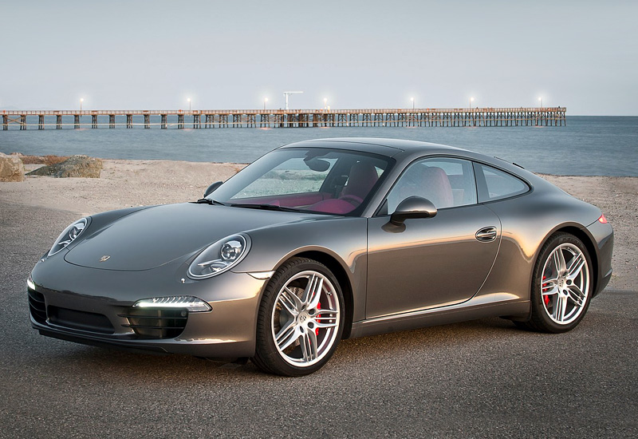
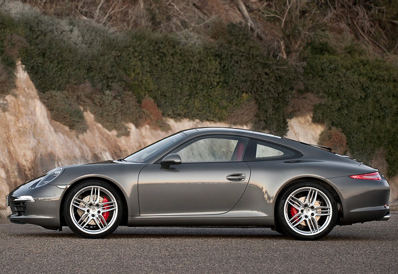
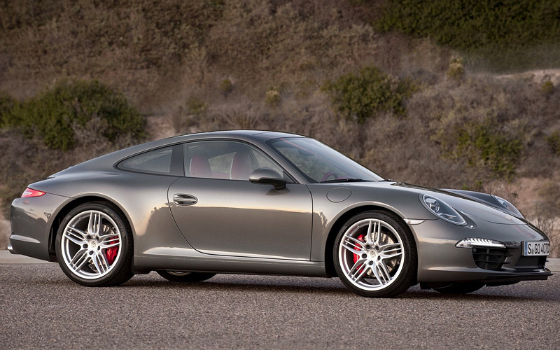
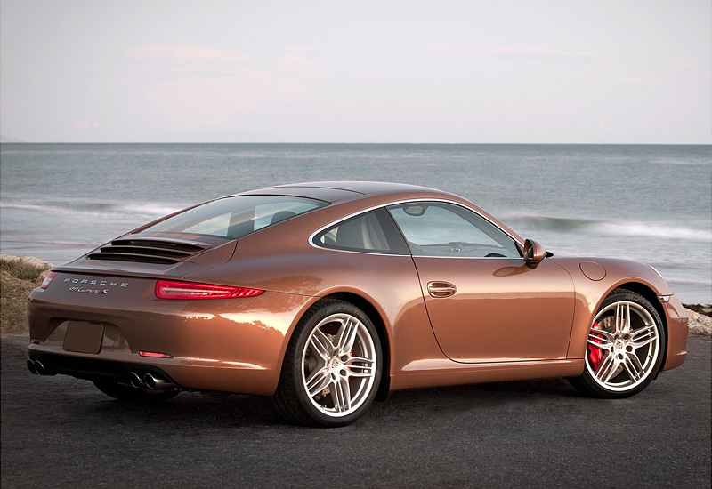
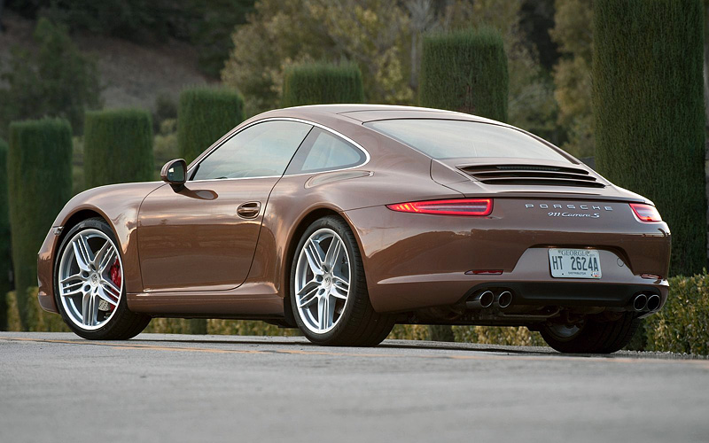
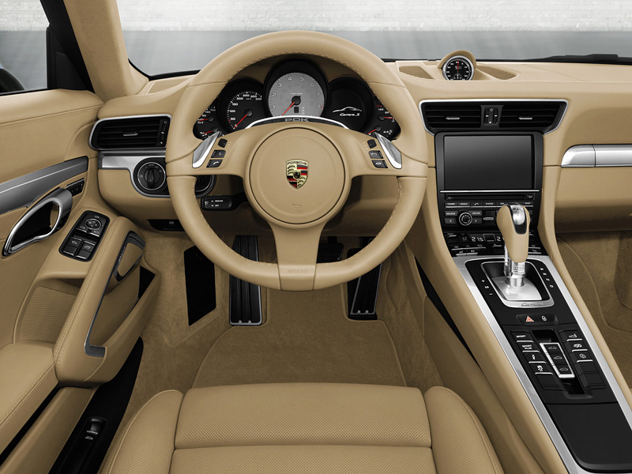
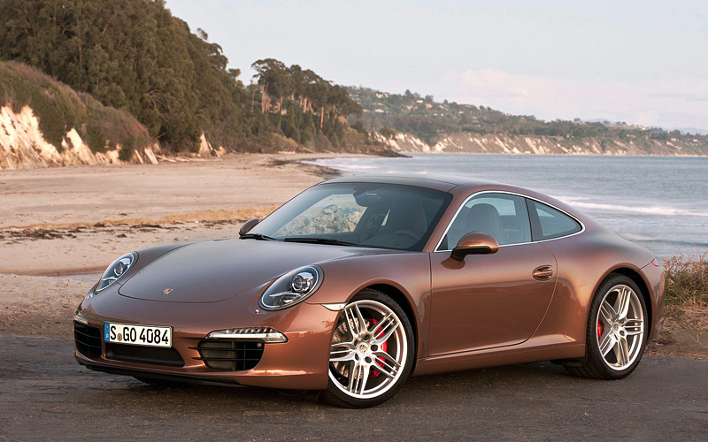

Описание Porsche 911 Carrera S (991)
Porsche 991 — внутреннее обозначение для седьмого поколения Porsche 911, который был представлен во Франкфуртском автосалоне 15 сентября 2011 года в качестве замены 997. Первые фотографии и информация были найдены 23 августа 2011 года.
В настоящее время оснащается 2 двигателями объёмом 3,4 и 3,8 литра, а также дополнительно системой «старт-стоп» и электро-механическим усилителем руля. Автомобиль также оснащается новой семиступенчатой механической коробкой передач, впервые применённой в производстве автомобилей, наряду с семиступенчатой преселективной коробкой передач с двойным сцеплением, которая была доступна ещё в 997.
По сравнению с исходящим 997, колесная база 991 увеличена на 100 мм до 2450 мм, общая длина — на 70 мм до 4490 мм. Новый Transaxle был разработан так, что задние колеса были перемещены на 76 мм назад по отношению к положению двигателя, что значительно улучшает распределение веса и характеристики нового 911. В связи с использованием высокопрочных сталей, алюминия и некоторых сплавов вес был уменьшен на 45 кг до 1470 кг.
Изображения 991 были опубликованы в Интернете 18 августа 2011 года, до официального дебюта автомобиля. Фотографии 991-го показали, что Porsche сделал эволюционный шаг в дизайне, так же, как и в предыдущих поколениях 997 и 996.
Porsche 991 получил титул World Performance Car 2012, вскоре после того, как умер знаменитый дизайнер Porsche Фердинанд Александр Порше.
В марте 2013 года на Женевском автосалоне было показано купе 911 GT3. Оно имеет тот же 3,8-литровый двигатель с увеличенной до 475 л. с. мощностью и 7-ступенчатую коробку передач Porsche Doppelkupplung.
В мае 2013 года была представлена модель 911 Turbo — самая мощная в линейке моделей 911. Она оснащается форсированным до 520 лошадиных сил 3,8-литровым двигателем и исключительно роботизированной трансмиссией (раньше модели Turbo оснащались механической коробкой передач). Кроме того, наряду с моделью Turbo появилась модель Turbo S, мощность которой была увеличена до 560 л. с.
Фото Porsche 911 Carrera S (991)





